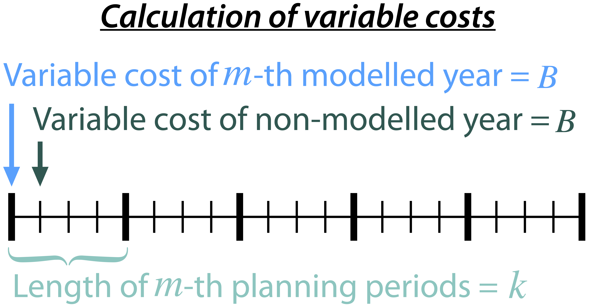

utils¶
This module contains utility functions for the model.
Here, we determine factors to covert future value to present value for costs and benefits. To account for the variable factor, fixed factor, and capital factor, we need to convert all future costs to their net present value. This means adjusting for the time value of money so that all costs are expressed in terms of today's dollars.
We also assume that variable cost and fixed cost for non-modelled years are assumed to be equal to the cost of the last modelled year preceding them. This allows for consistent comparison across different time periods and technologies.
Variable Factor
{kind=link}
Given the following:
Variable cost of modeled year: \(B\)
Discount rate: \(r\)
\(m\)-th modeled year: \(m = y - y_\text{min}\)
Depreciation periods: \(n\)
The total present value can be calculated as follows:
And we can calculate the variable factor as follows:
Fixed Factor
We can equate the fixed factor with the variable factor as follows:
Investment Factor

Given the following:
Weighted Average Cost of Capital (WACC, or otherwise known as the interest rate): \(i\)
Discount rate: \(r\)
\(m\)-th modeled year: \(m = y - y_\text{min}\)
Length of \(m\)-th planning periods: \(k\)
The total present value can be calculated as follows:
From the above, we can solve for the annualized cost of depreciation periods, \(A\), as:
The capital recovery factor is then calculated as:
Let's focus on the time periods that fall within the modelled time horizon (indicated in black colour). We can calculate the length of time periods, \(k\), as follows:
Using \(k\), we can calculate the net present value as follows:
And we can calculate the investment factor as follows:
- prepshot.utils.calc_cost_factor(discount_rate, modeled_year, year_min, next_modeled_year)[source]¶
Compute the variable and fixed cost factor while considering the multi-stage planning horizon.
- Parameters
discount_rate (float) -- The discount rate to apply.
modeled_year (int) -- The year in which the cost occurs.
year_min (int) -- The first year of the planning horizon. All costs are discounted to this year.
next_modeled_year (int) -- The subsequent modeled year. The cost incurred bewteen modeled_year and modeled_year and next_modeled_year is calculated.
- Returns
The computed cost factor.
- Return type
float
- Raises
ValueError -- if next_modeled_year < modeled_year.
Examples
Given annual cost incurred in 2025, next_modeled_year = 2030, and starting year = 2020, compute present value in 2020 of the cost incurred in 2025-2029:
>>> calc_cost_factor(0.05, 2025, 2020, 2030) 3.561871
- prepshot.utils.calc_inv_cost_factor(dep_period, interest_rate, year_built, discount_rate, year_min, year_max)[source]¶
Compute the investment cost factor. When the depreciation period is greater than the planning horizon, the investment cost factor is calculated by only considering the period within the planning horizon.
- Parameters
dep_period (int) -- Depreciation period, in years, i.e., lifetime of the infrastructure.
interest_rate (float) -- Interest rate.
year_built (int) -- Year of investment.
discount_rate (float) -- Discount rate.
year_min (int) -- Minimum year, i.e., the first year of the planning horizon.
year_max (int) -- Maximum year, i.e., the last year of the planning horizon.
- Returns
Investment cost factor.
- Return type
float
- Raises
ValueError -- If year_max <= year_min, year_max < year_built, or year_built < year_min.
Examples
Given a depreciation period of 20 years, interest rate of 0.05, year of investment in 2025, discount rate of 0.05, planning horizon from 2020 to 2050, compute the investment cost factor:
>>> calc_inv_cost_factor(20, 0.05, 2025, 0.05, 2020, 2050) 0.783526
If the depreciation perios is 100 years, compute the investment cost factor for the same scenario:
>>> calc_inv_cost_factor(100, 0.05, 2025, 0.05, 2020, 2050) 0.567482
- prepshot.utils.cartesian_product(*args)[source]¶
Generate cartesian product of input iterables.
- Parameters
args (List[Union[int, str]]) -- Iterables to be combined.
- Returns
List of tuples representing the Cartesian product.
- Return type
List[Tuple[Union[int, str]]]
Examples
Combine two lists [1, 2] and [7, 8]:
>>> cartesian_product([1, 2], [7, 8]) [(1, 7), (1, 8), (2, 7), (2, 8)]
- prepshot.utils.check_positive(*values)[source]¶
Ensure all values are greater than 0.
- Parameters
values (Union[int, float]) -- Values to be checked.
- Raises
ValueError -- If any value is less than or equal to 0.
- Return type
None
- prepshot.utils.interpolate_z_by_q_or_s(name, qs, zqv)[source]¶
Interpolate forebay water level (Z) by reservoir storage (S) or tailrace water level (Z) by the reservoir outflow (Q).
- Parameters
name (str) -- Code of the hydropower station.
qs (Union[np.ndarray, float]) -- Reservoir storage or outflow values.
zqv (pandas.DataFrame) -- DataFrame of ZQ or ZV values.
- Returns
Interpolated values.
- Return type
Union[np.ndarray, float]